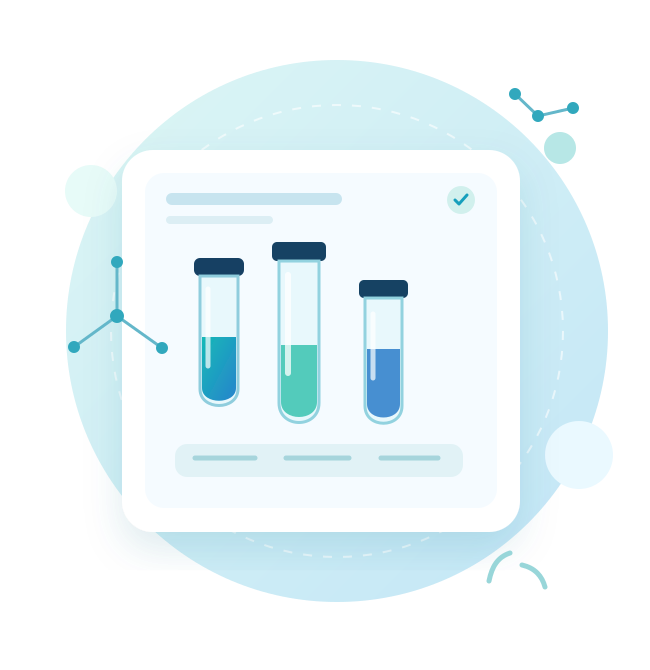
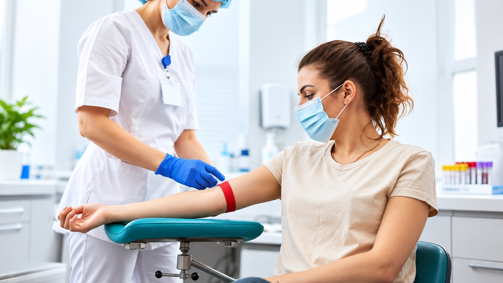
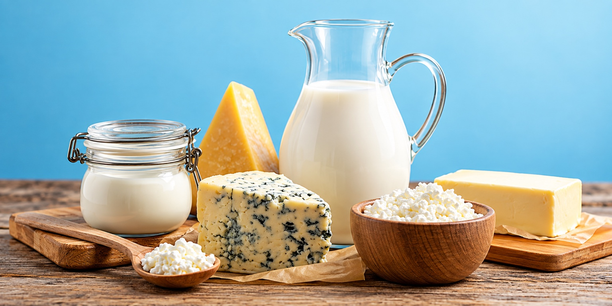
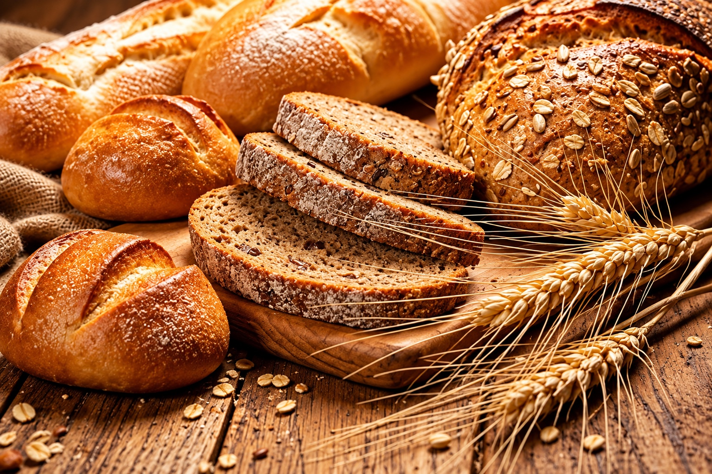

Exames com informação ao seu alcance.
Conheça os exames divulgados pelo laboratório e entre em contato para confirmar disponibilidade e preparo.

Alguns dos nossos testes
e exames
Disponibilizamos exames laboratoriais para atender às necessidades de prevenção e diagnóstico dos nossos pacientes.

Check-up laboratorial
Reúne exames importantes para avaliar a saúde, identificar alterações e auxiliar na prevenção de doenças.

Teste de tolerância à lactose
Avalia a capacidade do organismo em digerir a lactose, açúcar presente no leite e derivados.

Investigação de intolerância ao glúten
Avalia marcadores associados à doença celíaca e possíveis reações relacionadas ao consumo de glúten.
Sexagem fetal
Analisa o DNA fetal presente no sangue materno para identificar o sexo do bebê a partir da 8ª semana de gestação.
Toxicológico para CNH
Detecta o uso de substâncias psicoativas em um período prolongado, conforme as exigências para a CNH.
Teste de paternidade
Compara o DNA dos envolvidos para determinar, com alta precisão, a existência de vínculo biológico de paternidade.
Consulte disponibilidade, indicação e preparo com a equipe do laboratório.